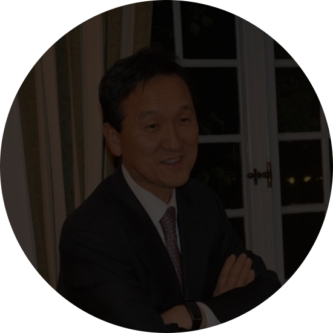
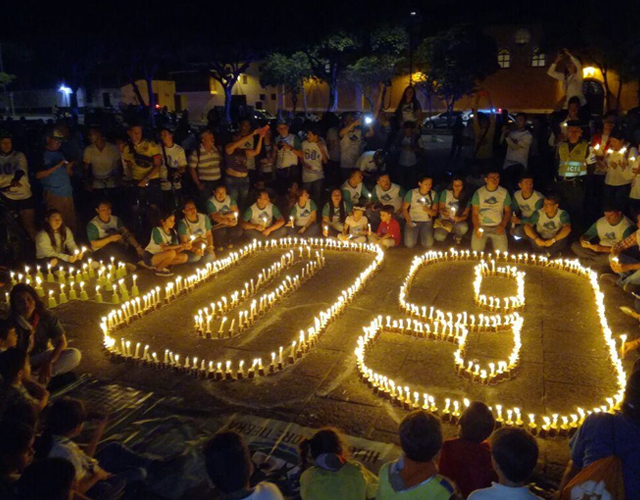
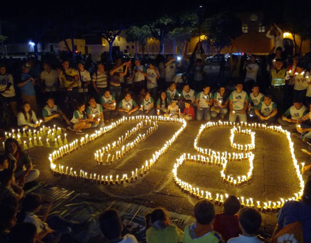

WWF(세계자연기금)는?
WWF는 세계적인 비영리 환경보전기관으로, 세계 100여 개국에서 글로벌 네트워크를
구축해
500만 명이상의 후원자들과 함께 활발히 활동하고 있습니다. 1961년 스위스에서
설립되었으며
WWF-International(세계자연기금 국제본부)는 스위스 글랑에 위치해있습니다.
우리의 푸른 별 지구의 자연환경을 보전하고 인간이 자연과 조화롭게 살아가는
미래를 만들고자 합니다. 이를 위해, 생물다양성을 보전하고 재생 가능한 자연자원의
이용을
지속 가능한 방식으로 유도하며, 환경오염 및 불필요한 소비 절감에 대한
의식을 고취시키는 데 힘쓰고 있습니다. 한국에서도 지난 10년간 환경보전 활동을
해왔으며,
2014년 공식적으로 WWF-Korea(세계자연기금 한국본부)가 설립되었습니다.
WWF 홈페이지를 방문하신 여러분
진심으로 환영합니다!
WWF의 의미는?
초창기 WWF는 “세계 야생동물 기금(World Wildlife Fund)”을 의미했습니다.
하지만 1986년에 이 명칭이 기관의 활동 범위를 모두 반영하지 못한다고 판단하여
“세계 자연 기금(World Wide Fund For Nature)”으로 변경했습니다.
반면 미국과 캐나다에서는 기존 명칭을 유지하고 있습니다.
1986년에 공식 명칭이 변경되고 15개가 넘는 언어로 번역이 이루어지면서 혼란이
생기자
1961년 설립 후 꾸준히 알려져 온 약자인 WWF로 국제 명칭을 통일하기로 2001년
결정했습니다.

WWF가 하는 일은?
WWF는 지구상의 다양한 생명체와 이들이 서식하는 아름다운 자연환경을
보전하는 일을 하고 있습니다. 이와 함께 인류가 동식물과 자연환경에 미치는 영향을
줄이는 데 힘쓰고 있습니다. WWF는 설립 이래 전 세계 100여개 국가에서
13,000여개 환경 프로젝트에 100억 달러 가까이 투자했으며,
지금도 한 번에 약 1,300개의 프로젝트를 수행하고 있습니다.
WWF-KOREA
WWF-KOREA
세계자연기금 한국본부
WWF는 세계 최대규모의 환경보전기관으로,
전세계 100개국에 500만명의 회원들이
글로벌 네트워크를 통해 활발히 활동하고 있습니다.
한국에서 지난 10년간 환경 보전 활동을 진행해왔으며,
2014년 공식적으로 WWF-Korea를 설립하였습니다.
WWF-Korea는 생물의 다양성을 보전하고,
재생 가능한 천연 자원들의 지속 가능한 활용 방안을 모색하며,
환경오염 및 낭비적 소비 절감에 대한 의식을
고취시킴으로써 지구의 자연환경 악화를 멈추고,
자연과 인간이 조화롭게 살 수 있는 미래를 만들고자 합니다.

-

손성환 이사장
· 세계자연기금 한국본부 이사장 (2018-현재)
· 한국 외국어대학교 초빙교수 (2016-현재)
· 인천시 GCF(녹색기후기금) 자문대사 (2016-현재)
· 유엔 한국협회 부회장 (2018-현재)
· 인천 기후환경연구센터 상임고문 (2017-현재)
· 국립외교원 명예교수 (2016-2019)
· 연세대 원주캠퍼스 대학원 객원교수 (2016-2018)
· 주 스웨덴 대사 (2013-2015)
· 외교부 기후변화 대사 (2011-2013) -
강희철 이사
· 법무법인(유) 율촌 대표 변호사 (1997-현재)
· 대한변호사협회 부협회장 (2011-2013)
· 한국증권법학회 부회장 (2009-현재)
· 상장회사협의 자문의원 (2005-현재)
· 대한상사중재원 중재인 (2004-현재)
· 금융감독원 감리위원회 위원 (2003-2006) -
박은실 이사
· 국무총리소속 지원위원회 위원 (2017-현재)
· 대통령 소속 국가건축정책위원회 위원 (2016-현재)
· 추계예술대학 문화예술경영대학원 교수 (2000-현재)
· 지역문화진흥기본계획수립 TF 위원장 (2015)
· 대통령직속 지역발전위원회 위원 (2011-2013)
· 유네스코 한국위원회 위원 (2010-2013)
· 한국문화관광연구원 이사 (2009-2011)
· 서울대학교 미술대학 학사 - 도시공학 박사 -
성래은 이사
· (주)영원무역홀딩스 대표이사 사장 (2016-현재)
· (주)영원무역 전무이사 (겸직) (2002-현재)
· 스탠퍼드 대학교 사회학 학사
WWF history
설립 당시 몇몇 헌신적인 야생동식물 운동가들의 소규모 모임에서 출발한
WWF(세계자연기금)는
현재 세계에서 가장 규모가 크고 명망 있는 환경보전 기관 중의 하나로 성장했습니다.
현재는 5개 대륙, 100여 국가에서 5백만 명 이상의 회원이 활동을 펼치고 있습니다.
활동 범위 역시 개별 종이나 서식지 보존을 위한 지역 차원의 노력에서 확대되어
전 세계 생물 다양성을 보전하고 지속가능한 발전을 이루기 위한 전략으로
확장되었습니다.
 

[1960년대]
1960년대 설립 후 십 년 만에 WWF는 5백60만 달러라는, 당시로는 엄청난 규모의
재원을 마련했습니다.
이 재원은 당시 가장 앞선 과학적 연구에 기반해 야생동식물 조사에서부터 밀렵 행위
근절, 교육에 이르기까지 전 세계 356개 환경보전 프로젝트에 지원되었으며, 초창기
지원 대상이 된 동식물이나 서식지는 이후 환경보전의 아이콘으로 성장한 경우가 많고
현재에도 WWF의 지속적인 관리를 받고 있습니다.
[1970년대]
1970년대 들어와 WWF는 동식물 종과 서식지 보존이라는 목표를 유지하되 접근 방식의
변화를 꾀하기 시작했습니다.
개별 프로젝트에 산발적으로 지원하기보다는 전체 생물군계와 생물종을 대상으로 하는
종합적인 보전정책에 대해 지원을 시작했으며, 그 일환으로 WWF는 각국 정부 및 국제
환경 조약과 보다 긴밀한 관계를 조성하고 환경을 위협하는 근본적인 요인에 대처하기
시작했습니다.
[1980년대]
창립 20주년을 맞은 WWF는 5개 대륙에 걸쳐 지구 면적의 1%에 달하는 보호구역을
조성했고 수많은 생물 종 보전에 기여했습니다.
전 세계에 걸쳐 조직이 확대되고 독자적 프로그램을 수행하기 시작하면서 환경보전이
모두의 이익에 부합할 뿐만 아니라 개발과 함께 진행되어야 한다는 점을 널리
홍보하기 시작했습니다.
오늘날 환경보전, 개발 그리고 기업전략에 이르기까지 다양한 분야에 영향을 미치는
철학으로 자리 잡았습니다.
[1990년대]
환경이 인류 활동 및 복지와 밀접한 관계에 있다는 인식이 폭넓게 자리 잡기 시작했고
생물 다양성의 가치 및 기후변화의 위협이 대두되기 시작해 이들 의제는 WWF의 1990년
조직 강령에 명시되었고 그 후 WWF의 현장 및 정책 수립 사업의 기틀을
마련하였습니다.
점차 국가별 프로젝트에서 벗어나 집중되고 통일된 접근법을 모색하기 위해, 세계에서
가장 중대한 역할을 하는 생태지역 및 6개의 주요 분야 (생물종, 산림, 해양 및 담수
자원 보존, 기후변화, 독성 화학물질)를 지목하고 이들 분야에 집중하는 전 지구적
환경보전 전략을 발전시켰습니다.
[2000년대]
지속적인 환경보전, 지속가능한 발전 및 지속 가능한 생활양식을 위한 변화를 꾀하기
시작했습니다.
WWF는 그간 형성해 온 글로벌 네트워크의 단합된 힘과 전문적인 역량을 토대로
현장에서의 환경보전 활동, 고위급 정책 수립 및 지원 활동, 민간부문과의 전략적인
제휴를 아우르는 혁신적인 제휴관계를 구축하고 있으며, 생물종을 보호하는 데
집중하여 기후변화나 국제 시장의 지속가능한 발전방향 등 국제적인 난제에 대응하고
있습니다.